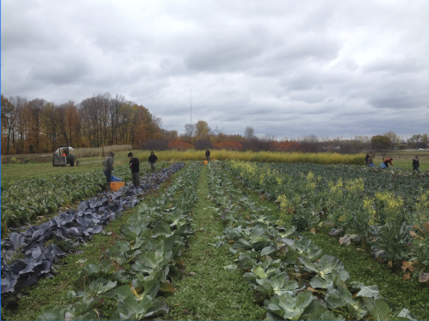
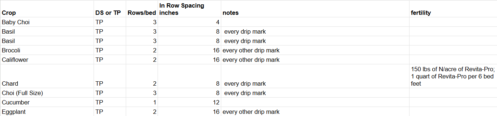

Overview
Crop planning connects what customers want with what the farm can grow. Farmers must decide which crops to plant, how much of each crop to grow, and when to plant them. These decisions depend on growing conditions, available space, infrastructure, labor, and market demand.

Choosing Crops and Varieties
What Crops Should a Farmer Plant?
- Market demand: Consider which crops customers want to buy.
- Variety characteristics: Compare market preferences, expected yields, and pest and disease resistance.
- Space and infrastructure: Consider growing space and needs such as trellising, irrigation, and hoop houses.
- Diversity and risk: A mix of crops reduces dependence on the success of a single crop.
- Crop rotation: Select crops that fit the farm's rotation plan.
Attributes to Consider When Selecting Varieties
- Pest and disease resistance
- Ability to compete with weeds
- Flavor
- Appearance and customer appeal
- Seed cost
- Expected yield
Deciding How Much to Plant
- Market demand
- Estimate how much of each crop customers are likely to purchase.
- Expected yield
- Use yield estimates for the crop and variety to determine how much planting area is needed.
- Available space
- Decide how much land or bed space to dedicate to each crop.
- Labor availability
- Consider the workers and time available for planting, watering, cultivation, harvesting, and packing.
- Seed and yield charts
- Consult a direct-seeded vegetable chart for seed quantities and expected yields per 100-foot row or acre.
Planting Dates and Succession Planting
When Should Crops Be Planted?
- Match planting dates to the crop's growing season and time needed to reach harvest.
- Plan backward from desired harvest and delivery dates.
- Avoid having all crops mature at the same time.
- Coordinate expected harvests with weekly customer demand.
In The Market Gardener, a weekly delivery table is used to plan which crops should be ready at different points in the season.
What Is Succession Planting?
Succession planting involves planting crops in staggered batches or growing another crop in the same space after an earlier harvest.
Why Is It Important?
- Maintains a more consistent harvest supply
- Reduces overwhelming harvest gluts
- Keeps growing space productive
- Distributes planting and harvesting work over time
In-Row and Between-Row Spacing
- In-row spacing
- The distance between plants within the same row. It affects plant density, root space, and competition for light, water, and nutrients.
- Between-row spacing
- The distance between adjacent rows. It affects equipment access, airflow, and canopy closure.
Campus Farm Row Spacing Example

Bed Systems and Row Systems
Bed System
Crops grow in defined beds, often approximately three to four feet wide, separated by dedicated walkways. A bed may contain multiple crop rows.
- Supports intensive use of growing space
- Keeps foot traffic out of the growing area
- Helps limit soil compaction
Row System
Crops grow in rows with spacing selected for crop needs and the equipment used.
- Provides access for cultivation and harvesting
- Can accommodate tractors and other machinery
- Requires planning for equipment clearance
High-Intensity and High-Density Planting
High-density planting increases the number of plants grown in a given area. Its success depends on crop choice, spacing, and management.
Potential Benefits
- Production per area: Can increase harvests from limited growing space.
- Weed suppression: Dense canopies shade the soil and can reduce weeds.
- Resource use: Well-managed systems can make effective use of land, water, and nutrients.
- Harvest access: Some compact or trained systems make harvesting easier.
Potential Drawbacks
- Establishment costs: More plants, trellising, or infrastructure can increase initial investment.
- Management demands: Dense plantings may require careful pruning, irrigation, fertility management, and cultivation.
- Competition: Excessive crowding can reduce plant growth, crop quality, or total yield.
- Pest and disease pressure: Dense foliage can limit airflow and retain humidity.
- Crop suitability: Not every crop or variety performs well at high density.
Sources and Supporting Materials
- Lecture 7
- The Market Gardener by Jean-Martin Fortier. Chapter 13, p. 133-142